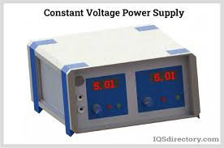

Week 1: Introduction & Atomic Structure - Comprehensive Notes
1
Course Overview
Welcome to Medical Physics for DPT students! This 16-week course is designed to provide you with fundamental physics concepts essential for understanding and safely using therapeutic modalities in physiotherapy practice.
Course Structure
The course is divided into three main components:
- Theory Classes (2 hours/week): Foundational physics concepts and their applications in physiotherapy
- Practical Classes (1 hour/week): Hands-on experience with equipment and techniques
- Assessments: Continuous evaluation, mid-term exam, and final exam
Course Objectives:
- Understand basic physics principles relevant to physiotherapy
- Apply physics concepts to therapeutic modalities
- Safely operate and maintain physiotherapy equipment
- Comprehend the underlying mechanisms of various treatment modalities
- Implement safety protocols for electrical and radiation equipment
Clinical Relevance: Physics principles form the foundation of many therapeutic modalities used in physiotherapy. Understanding these principles helps practitioners make informed decisions about treatment parameters, equipment selection, and safety considerations.
2
Importance of Physics in Physiotherapy
Physics is the science that deals with matter, energy, and their interactions. In physiotherapy, physics principles are applied through various therapeutic modalities to achieve clinical outcomes.
Key Areas of Application
| Physics Principle |
Therapeutic Modality |
Clinical Application |
| Electrical Current |
Electrical Stimulation |
Pain management, muscle re-education |
| Sound Waves |
Therapeutic Ultrasound
Tissue healing, deep heating |
| Electromagnetic Radiation |
Shortwave Diathermy |
Deep tissue heating |
| Heat Transfer |
Thermotherapy
Pain relief, tissue extensibility
| Mechanical Forces |
Traction, Compression
Spinal decompression, edema reduction
Example: Electrical Stimulation
When using electrical stimulation for pain management, understanding the physics of electrical currents helps therapists:
- Select appropriate parameters (frequency, intensity, duration)
- Choose the right waveform (monophasic, biphasic, etc.)
- Position electrodes correctly for optimal current flow
- Avoid tissue damage by staying within safe limits
- Explain the treatment mechanism to patients
Why DPT Students Need Physics:
- To understand how therapeutic modalities work
- To apply treatments safely and effectively
- To troubleshoot equipment issues
- To adapt treatments for individual patients
- To communicate effectively with other healthcare professionals
3
Basic Structure of Atom
All matter in the universe is composed of atoms, which are the basic building blocks of elements. Understanding atomic structure is fundamental to grasping electrical phenomena in physiotherapy.
Historical Development
The concept of the atom has evolved over time:
- Dalton's Model (1808): Atoms are indivisible, solid spheres
- Thomson's Model (1897): "Plum pudding" model with electrons embedded in positive charge
- Rutherford's Model (1911): Nuclear model with electrons orbiting a dense nucleus
- Bohr's Model (1913): Electrons orbit in specific energy levels
- Modern Quantum Model: Electrons exist in probability clouds (orbitals)
Subatomic Particles
An atom consists of three main subatomic particles:
| Particle |
Charge |
Mass (approx.) |
Location |
Role in Electricity |
| Proton |
+1 |
1 atomic mass unit |
Nucleus |
Determines element identity |
| Neutron |
0 |
1 atomic mass unit |
Nucleus |
Stabilizes nucleus |
| Electron |
-1 |
1/1836 atomic mass unit |
Orbiting nucleus |
Responsible for electrical current |
Key Concept: In a neutral atom, the number of protons equals the number of electrons. The number of protons determines the element's identity (atomic number), while the sum of protons and neutrons gives the atomic mass.
4
Electron Shells and Valence Electrons
Electrons are arranged in specific energy levels around the nucleus called shells or orbitals. This arrangement determines an atom's chemical properties and electrical behavior.
Electron Shell Structure
Electron shells are labeled K, L, M, N, etc., with K being closest to the nucleus. Each shell can hold a maximum number of electrons:
- K shell (n=1): Maximum 2 electrons
- L shell (n=2): Maximum 8 electrons
- M shell (n=3): Maximum 18 electrons
- N shell (n=4): Maximum 32 electrons
Valence Electrons
Valence electrons are the electrons in the outermost shell of an atom. They are particularly important because:
- They determine the atom's chemical properties
- They are involved in chemical bonding
- They influence electrical conductivity
- Atoms tend to seek stable configurations (full outer shells)
Example: Sodium (Na) and Chlorine (Cl)
Sodium (atomic number 11) has electron configuration: 2-8-1 (1 valence electron)
Chlorine (atomic number 17) has electron configuration: 2-8-7 (7 valence electrons)
Sodium donates its valence electron to chlorine, forming NaCl (table salt), where both have stable configurations.
Electron Behavior in Electricity
In electrical conduction, valence electrons play a crucial role:
- Conductors: Have few valence electrons (1-3) that can move freely
- Insulators: Have many valence electrons (5-8) that are tightly bound
- Semiconductors: Have 4 valence electrons and intermediate properties
Clinical Relevance: Understanding valence electrons helps explain why certain materials are used in therapeutic equipment. For example, electrodes in electrical stimulation are made of conductive metals with free valence electrons, while equipment casings are made of insulating plastics with tightly bound electrons.
5
Electron Movement and Conduction
Electron movement is the fundamental basis of electrical current, which powers many therapeutic modalities in physiotherapy.
Electron Behavior
Electrons are not stationary particles but exist in regions of space called orbitals. Their behavior is governed by quantum mechanics:
- Electrons can exist in discrete energy levels
- They can move between energy levels by absorbing or emitting energy
- In conductors, valence electrons can move freely throughout the material
- This movement of charge constitutes electric current
Electric Current
Electric current is the rate of flow of electric charge. In metals, it's primarily the flow of electrons:
- Conventional Current: Flow of positive charge (historical convention)
- Electron Flow: Actual movement of electrons (opposite to conventional current)
Key Concept: In physiotherapy equipment, we typically refer to conventional current, but understanding electron flow helps explain the underlying physics of therapeutic modalities.
Factors Affecting Electron Flow
Several factors influence how easily electrons flow through a material:
- Material Type: Conductors allow easy flow, insulators resist it
- Temperature: Higher temperature increases resistance in metals
- Material Purity: Impurities disrupt electron flow
- Material Structure: Crystal structure affects electron mobility
- Applied Voltage: Higher voltage increases electron flow rate
Example: Copper vs. Rubber
Copper has one valence electron per atom that can move freely, making it an excellent conductor used in electrical wiring. Rubber has tightly bound electrons and is used as insulation to prevent electric shock.
6
Conductors vs. Insulators
Materials can be classified based on their ability to conduct electricity. This classification is essential for designing safe and effective therapeutic equipment.
Conductors
Conductors are materials that allow electrons to flow freely. They have:
- Many free electrons in their outer shells (typically 1-3 valence electrons)
- Low resistance to electrical flow
- High electrical conductivity
- Examples: Metals like copper, silver, gold, aluminum
Insulators
Insulators are materials that resist the flow of electrons. They have:
- Electrons tightly bound to their atoms (typically 5-8 valence electrons)
- High resistance to electrical flow
- Low electrical conductivity
- Examples: Rubber, plastic, glass, ceramic, wood
Semiconductors
Semiconductors have properties between conductors and insulators:
- Typically have 4 valence electrons
- Conductivity can be controlled by doping, temperature, or light
- Examples: Silicon, germanium, gallium arsenide
- Used in electronic components of therapeutic equipment
Application in Physiotherapy Equipment:
- Electrodes: Made of conductive materials (silver, carbon) to allow current flow to tissues
- Equipment Casings: Made of insulating materials (plastic) to protect users
- Circuit Boards: Use conductive traces (copper) and insulating substrates
- Electronic Components: Use semiconductors for controlling current flow
7
Conduction in Solids
In solid conductors, particularly metals, the arrangement of atoms and behavior of electrons determine their electrical properties.
Metallic Bonding
In metals, atoms are arranged in a closely packed lattice structure. The outermost electrons of these atoms are not bound to specific atoms but form a "sea" of delocalized electrons that can move freely throughout the material. This is known as metallic bonding.
Electron Mobility
Electron mobility is a measure of how quickly electrons can move through a material when an electric field is applied. It depends on:
- Material Type: Different metals have different electron mobilities
- Temperature: Higher temperature increases atomic vibrations, reducing mobility
- Impurities: Defects in the crystal structure scatter electrons
- Crystal Structure: More ordered structures have higher mobility
Resistance and Resistivity
Resistance is the opposition to current flow in a material. It depends on:
- Material Type: Each material has a characteristic resistivity
- Length: Longer conductors have higher resistance
- Cross-sectional Area: Thicker conductors have lower resistance
- Temperature: Resistance generally increases with temperature in metals
Ohm's Law: V = I × R
Where V is voltage (volts), I is current (amperes), and R is resistance (ohms). This fundamental relationship governs the behavior of electrical circuits in therapeutic equipment.
Example: Copper vs. Aluminum Wiring
Copper has lower resistivity than aluminum, meaning it conducts electricity better. However, aluminum is lighter and cheaper. In therapeutic equipment, copper is often used for critical components where low resistance is essential, while aluminum may be used for less critical parts to reduce weight and cost.
8
Convection in Liquids and Gases
While conduction refers to the movement of electrons, convection involves the movement of particles (atoms or molecules) in fluids (liquids and gases). In convection, heat is transferred through the bulk movement of the fluid itself.
Types of Convection
- Natural Convection: Caused by density differences due to temperature variations. Hotter fluid becomes less dense and rises, while cooler fluid sinks.
- Forced Convection: Caused by external forces like pumps, fans, or stirring devices.
Convection in Physiotherapy
Convection plays a crucial role in several physiotherapy modalities:
Hydrotherapy
In hydrotherapy, water is used for therapeutic purposes. Convection currents in water help distribute heat evenly:
- Warm water rises, creating natural convection currents
- Agitation (whirlpool) creates forced convection
- Convection enhances heat transfer to the patient's body
- Provides uniform temperature distribution in the therapeutic pool
Thermal Modalities
Convection is involved in various thermal treatments:
- Hot packs:
Heat transfer through convection of air and moisture
- Cold packs:
Similar principles for cooling
- Fluidotherapy:
Uses forced convection of heated air particles
Clinical Application: Whirlpool Therapy
In whirlpool therapy, the agitation of water creates forced convection currents that:
- Distribute heat evenly throughout the water
- Provide gentle massage through water movement
- Enhance circulation in the immersed body part
- Help remove debris from wounds
- Provide sensory stimulation
Example: Contrast Baths
Contrast baths involve alternating immersion in hot and cold water. Convection currents in both baths help maintain consistent temperatures and enhance the thermal effect on the patient's tissues. The temperature difference creates stronger convection currents, improving the therapeutic effect.
9
Real-life PT Applications
Understanding electron movement, conduction, and convection is essential for various physiotherapy applications. Let's explore some real-world examples.
Electrical Stimulation Modalities
Electrical stimulation uses electrical currents to produce physiological effects:
Transcutaneous Electrical Nerve Stimulation (TENS)
- Uses low-voltage electrical currents to stimulate nerves
- Conductive electrodes deliver current to the skin
- Electron flow creates electrical impulses that block pain signals
- Understanding current parameters (frequency, intensity) is crucial for effectiveness
Electrical Muscle Stimulation (EMS)
- Uses electrical currents to cause muscle contractions
- Conductive electrodes placed over motor points
- Electron flow depolarizes muscle membranes, causing contractions
- Used for muscle re-education and strengthening
Therapeutic Ultrasound
Therapeutic ultrasound uses high-frequency sound waves for tissue healing:
- Converts electrical energy to mechanical energy (sound waves)
- Understanding electrical conduction in the transducer is essential
- Sound waves cause vibration at the molecular level
- Produces thermal and non-thermal effects in tissues
Shortwave Diathermy
Shortwave diathermy uses electromagnetic radiation for deep heating:
- Generates electromagnetic fields in the radiofrequency range
- Understanding electromagnetic principles is crucial
- Produces deep heating in tissues with high water content
- Used for pain relief and tissue healing
Clinical Decision Making:
Understanding the physics behind these modalities helps physiotherapists:
- Select appropriate modalities for specific conditions
- Set correct treatment parameters
- Position electrodes or applicators effectively
- Ensure patient safety
- Explain treatments to patients
- Troubleshoot equipment issues
10
Lab Safety Protocols
Safety is paramount when working with electrical equipment in a laboratory setting. Following proper safety protocols prevents accidents and ensures a safe learning environment.
General Laboratory Safety
Before Starting Lab Work:
- Attend all safety briefings and demonstrations
- Read and understand all lab instructions
- Identify the location of safety equipment (fire extinguisher, first aid kit, emergency shower)
- Know emergency procedures and exit routes
- Remove loose clothing, jewelry, and tie back long hair
- Wear appropriate personal protective equipment (PPE)
Electrical Safety Rules
When Working with Electrical Equipment:
- Always inspect equipment for damage before use
- Never use equipment with frayed cords, exposed wires, or damaged plugs
- Keep water and other liquids away from electrical equipment
- Use only one hand when working with live circuits when possible
- Turn off power and unplug equipment before making changes
- Use insulated tools and equipment
- Ensure proper grounding of all equipment
- Never override safety features or interlocks
- Report any electrical shocks immediately, even minor ones
Personal Protective Equipment (PPE)
Appropriate PPE must be worn at all times during lab sessions:
- Safety Glasses: Protect eyes from chemical splashes and flying debris
- Lab Coat: Protects skin and clothing from spills
- Closed-toe Shoes: Protect feet from falling objects and spills
- Insulated Gloves: When working with electrical equipment
Remember: No experiment or demonstration is so important that it should be pursued at the risk of safety. Always prioritize safety over completing lab activities.
11
Introduction to Lab Equipment
In this practical session, you will become familiar with basic equipment used in medical physics experiments. Understanding how to use this equipment properly is essential for conducting experiments safely and accurately.
Essential Lab Equipment
Digital Multimeter
Measures voltage, current, and resistance. Essential for all electrical experiments.

DC Power Supply
Provides controlled electrical energy for experiments. Adjustable voltage and current.
Breadboard
For building test circuits without soldering. Allows easy component changes.
Electronic Components
Resistors, capacitors, diodes, and wires for building circuits.
Equipment Handling Guidelines
- Inspect Before Use: Check for damage, frayed cords, or loose connections
- Use Correct Settings: Ensure multimeters and power supplies are set to appropriate ranges
- Handle with Care: Electronic equipment is sensitive to shock and vibration
- Store Properly: Keep equipment in designated areas when not in use
- Report Issues: Notify instructor of any malfunctioning equipment
Basic Equipment Functions
Digital Multimeter
- Voltage Measurement: Connected in parallel with the circuit
- Current Measurement: Connected in series with the circuit
- Resistance Measurement: Component must be disconnected from circuit
- Continuity Test: Checks for complete electrical path
DC Power Supply
- Voltage Control: Adjusts output voltage (typically 0-30V)
- Current Limit: Protects circuits from excessive current
- Output Terminals: Positive (red) and negative (black) connections
- Display: Shows voltage and current readings
Example: Setting Up a Simple Circuit
To set up a simple circuit with a resistor and LED:
- Connect power supply positive to breadboard
- Insert resistor in breadboard
- Connect LED in series with resistor (observe polarity)
- Connect LED negative to power supply negative
- Set power supply to appropriate voltage
- Measure voltage across components with multimeter
12
Basic Electrical Safety
Understanding and implementing electrical safety is crucial when working with therapeutic equipment in both laboratory and clinical settings.
Understanding Electrical Hazards
Electricity can cause several types of injuries:
- Electric Shock: Current passing through the body can disrupt normal electrical activity
- Burns: Electrical current can cause thermal burns at entry and exit points
- Falls: Electric shock can cause loss of muscle control leading to falls
- Secondary Injuries: From equipment malfunction or improper use
Factors Affecting Shock Severity
The severity of electric shock depends on:
- Current Amount: Higher current is more dangerous
- Current Path: Through vital organs is most dangerous
- Current Duration: Longer exposure increases damage
- Current Type: AC is generally more dangerous than DC at the same voltage
- Body Resistance: Varies with skin condition and contact area
Current Effects on the Body:
- 1 mA: Threshold of sensation
- 5-10 mA: Painful shock, muscle contraction
- 10-20 mA: "Can't let go" threshold
- 50-100 mA: Ventricular fibrillation, possible death
- >100 mA: Severe burns, cardiac arrest
Safety Precautions
Personal Safety
- Keep hands dry when working with electrical equipment
- Use insulated tools and equipment
- Wear rubber-soled shoes
- Remove metal jewelry
- Use one hand when possible to avoid current across chest
Equipment Safety
- Ensure proper grounding of all equipment
- Use Ground Fault Circuit Interrupters (GFCIs) where required
- Regularly inspect cords and plugs for damage
- Never override safety features
- Use appropriate fuses and circuit breakers
Clinical Application:
In physiotherapy practice, electrical safety is paramount when using:
- Electrical stimulation devices
- Ultrasound equipment
- Shortwave diathermy units
- TENS and EMS machines
Always follow manufacturer guidelines and institutional safety protocols.
13
Handling of Measuring Instruments
Measuring instruments are delicate and require careful handling to ensure accurate measurements and prevent damage. Proper use and maintenance of these instruments are essential skills in medical physics.
Types of Measuring Instruments
- Digital Multimeters: Measure voltage, current, resistance, continuity
- Oscilloscopes: Display waveform shapes and measure signal properties
- Function Generators: Produce electrical waveforms for testing
- LCR Meters: Measure inductance, capacitance, and resistance
- Power Meters: Measure electrical power consumption
Proper Handling Techniques
Before Use
- Inspect for physical damage (cracks, loose parts)
- Check calibration status and date
- Verify battery level or power connection
- Ensure probes and leads are in good condition
- Select appropriate measurement range
During Use
- Hold probes by the insulated handles only
- Make firm contact with measurement points
- Avoid touching metal parts of probes
- Read measurements at eye level for accuracy
- Do not exceed instrument ratings
After Use
- Turn off power and disconnect probes
- Set to highest range or off position
- Store in protective case or designated area
- Report any issues or inaccuracies
- Return to proper storage location
Common Errors and Precautions
Common Measurement Errors:
- Wrong Range Selection: Can damage instrument or give inaccurate readings
- Improper Connection: Series vs parallel connection errors
- Environmental Factors: Temperature, humidity, electromagnetic interference
- Lead Resistance: Can affect low-resistance measurements
- Loading Effect: Instrument affects the circuit being measured
Maintenance and Care
- Regular calibration according to manufacturer schedule
- Keep clean and dry, avoid moisture and dust
- Store in temperature-controlled environment
- Use protective cases when transporting
- Follow manufacturer's maintenance guidelines
Example: Measuring Voltage
To measure voltage across a component:
- Set multimeter to voltage mode (V)
- Select appropriate range (start high, reduce if needed)
- Connect black probe to ground/negative reference
- Connect red probe to point to measure
- Read voltage display
- Disconnect probes before changing circuit
14
Demonstration of Conductors vs. Insulators
In this practical demonstration, you will test various materials for electrical conductivity and understand why certain materials are used in specific parts of therapeutic equipment.
Experiment Setup
Materials Needed: Multimeter, various test materials (copper wire, aluminum foil, rubber, plastic, wood, glass, pencil lead, paperclip, coin, eraser), battery or power supply, connecting wires
Circuit Assembly: Connect power supply to test circuit with material sample in series
Measurement: Use multimeter to measure current flow through each material
Recording: Document resistance values and classify materials
Analysis: Compare results and relate to material properties
Expected Results
| Material |
Expected Resistance |
Classification |
Use in PT Equipment |
| Copper Wire |
Very Low |
Excellent Conductor |
Wiring, electrodes |
| Aluminum Foil |
Low |
Good Conductor |
Heat sinks, shielding |
| Pencil Lead (Graphite) |
Medium |
Semiconductor |
Specialized sensors
| Paperclip (Steel) |
Low |
Good Conductor |
Internal components |
| Coin (Various) |
Low |
Good Conductor |
Contacts, switches
| Wood |
Very High |
Insulator |
Equipment bases |
| Rubber |
Very High |
Excellent Insulator |
Casings, handles |
| Plastic |
Very High |
Excellent Insulator |
Equipment casings |
| Glass |
Very High |
Excellent Insulator |
Insulators, displays |
| Eraser |
Very High |
Excellent Insulator |
Non-conductive parts
Demonstration Procedure
- Set up a simple circuit with a power supply, resistor, and test material
- Measure the current flow through each material
- Calculate resistance using Ohm's Law (R = V/I)
- Classify each material as conductor, semiconductor, or insulator
- Discuss why certain materials are used in specific equipment parts
Clinical Relevance:
Understanding conductivity helps explain:
- Why electrodes are made of conductive materials (silver, carbon)
- Why equipment casings are made of insulating materials (plastic, rubber)
- How electrical current flows through tissues during stimulation
- Why certain materials are used for patient contact surfaces
15
Lab Report Guidelines
After completing the practical session, you will prepare a comprehensive lab report. A well-structured lab report demonstrates your understanding of the experiment and its relevance to physiotherapy practice.
Lab Report Structure
- Title Page
- Experiment title
- Your name and student ID
- Course name and number
- Instructor name
- Date of experiment
- Abstract/Summary
- Brief overview of the experiment (1-2 paragraphs)
- Main objectives and findings
- Key conclusions
- Introduction
- Background information and theory
- Relevance to physiotherapy
- Objectives of the experiment
- Hypothesis (if applicable)
- Materials and Methods
- List of equipment and materials used
- Step-by-step procedure followed
- Circuit diagrams or experimental setup
- Safety precautions taken
- Results
- Data collected (tables, graphs)
- Observations made during experiment
- Calculations performed
- Statistical analysis (if applicable)
- Discussion
- Interpretation of results
- Comparison with expected values
- Explanation of discrepancies
- Limitations of the experiment
- Sources of error
- Conclusion
- Summary of key findings
- Answers to objectives
- Implications for physiotherapy practice
- Suggestions for improvement
- References
- List of all sources cited
- Proper citation format (APA, MLA, etc.)
- Appendices
- Raw data sheets
- Additional calculations
- Supplementary figures or tables
Writing Tips
Effective Lab Report Writing:
- Be Clear and Concise: Use precise language and avoid unnecessary words
- Use Passive Voice: "The circuit was connected" rather than "I connected the circuit"
- Include Units: Always include units with measurements
- Label Figures and Tables: Number and title all visual elements
- Be Objective: Present facts and data without bias
- Proofread: Check for spelling, grammar, and formatting errors
Common Mistakes to Avoid
- Missing or incomplete sections
- Inconsistent units or missing units
- Poorly labeled figures and tables
- Insufficient detail in methods
- Superficial discussion without analysis
- Failure to relate findings to physiotherapy
- Plagiarism or improper citation
Example: Results Section
"The resistance measurements for various materials are shown in Table 1. Copper wire exhibited the lowest resistance (0.1 Ω), while rubber showed the highest resistance (>10 MΩ). These results confirm that copper is an excellent conductor suitable for electrical wiring in therapeutic equipment, while rubber serves as an effective insulator for equipment casings."
16
Summary and Key Takeaways
Week 1 has introduced you to the fundamental concepts of atomic structure and electrical conduction that form the basis of medical physics in physiotherapy. Let's summarize the key points and their clinical relevance.
Core Concepts Covered
- Atomic Structure: Atoms consist of protons, neutrons, and electrons
- Electron Behavior: Electron movement is the basis of electrical current
- Conduction: Conductors allow electron flow, insulators resist it
- Convection: Heat transfer through fluid movement in hydrotherapy
- Electrical Safety: Essential for using therapeutic modalities safely
Clinical Applications
Physics in Physiotherapy Practice:
- Electrical Stimulation: Understanding current flow helps set appropriate parameters
- Equipment Safety: Knowledge of conductors and insulators prevents accidents
- Thermal Modalities:
Convection principles enhance heat transfer in hydrotherapy
- Equipment Maintenance:
Understanding basic physics aids in troubleshooting
- Patient Education:
Ability to explain treatment mechanisms to patients
Key Takeaways
Essential Knowledge for DPT Students:
- Atoms are the building blocks of matter, with electrons determining electrical properties
- Electrical current is the flow of electrons, governed by Ohm's Law (V = I × R)
- Materials are classified as conductors, insulators, or semiconductors based on electron behavior
- Convection transfers heat through fluid movement, important in hydrotherapy
- Safety is paramount when working with electrical equipment in clinical settings
- Understanding physics principles enhances clinical decision-making and patient care
Looking Ahead
In Week 2, we will build on this foundation by exploring:
- Static electricity and its applications
- Electrostatic fields and capacitors
- Capacitor arrangements in therapeutic equipment
- Practical experiments with static electricity
Preparation for Next Week
- Review the concepts of charge and electric fields
- Read about capacitors and their applications
- Think about examples of static electricity in daily life and clinical settings
- Complete any assigned readings or exercises
Remember
Physics is not just a theoretical subject but a practical tool that enhances your effectiveness as a physiotherapist. The more you understand the underlying principles, the better you can apply therapeutic modalities safely and effectively.